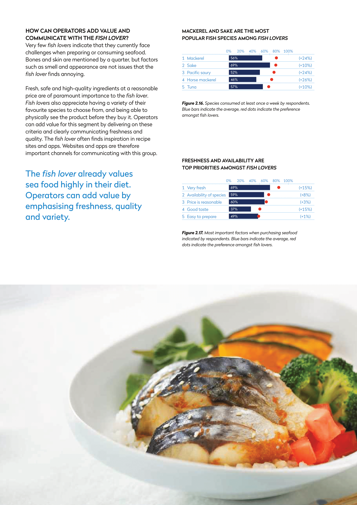
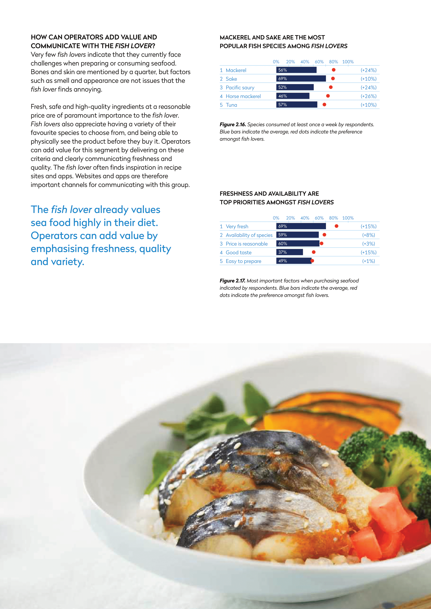
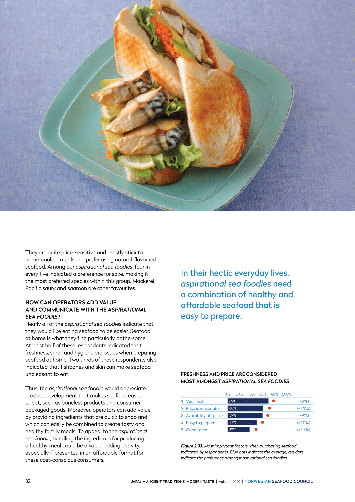
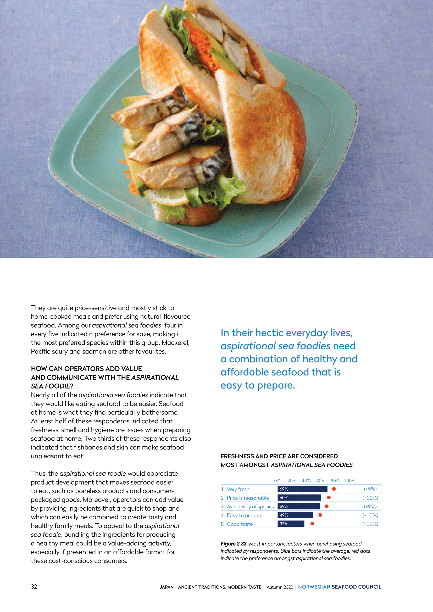

Prosjekt: Sjømat
Fra idé til rapport
I min første analytikerjobb jobbet jeg som trainee i en analytikeravdeling i Norges Sjømatråd, en interesseorganisasjon for norsk sjømat. Norges sjømatråd driver med opphavsmarkedsføring og har som mål øke verdien av all norsk sjømat. Én av måtene å gjøre det på er å øke kunnskapen ute hos forbrukerne, en annen er å skaffe sjømatbransjen den innsikten de trenger for å ta beslutninger. Med hjelp av "verdens største sjømatdatabase" jobbet jeg og min avdeling hovedsakelig med å fremstille ulike rapporter om sjømatkonsum verden over.
Én av rapportene jeg jobbet med heter "Fiskemarked" og utgis annethvert år. Her tok vi for oss hvert eksportmarked som er stort eller viktig for norsk sjømatråd. Dataen vi bruke var både data på konsum fra den enkelte landene, data på vår egen eksport og data på konkurransesituasjonen per art. Se under for et eksempel fra et av Norges viktigste eksportmarkeder på spesielt laks og makrell, Japan.


Fordypning
Et annet prosjekt jeg var med på var en studie hvor vi dykket dypere ned i det japanske sjømatkonsumet. Her jobbet vi sammen med et japansk selskap som stod for datainnhentingen, mens vi selv sto for databehandling, analyse og visualisering. I en sånn prosess er det viktig å løfte blikket, og i dette tilfellet huske visjonen til Norges sjømatråd; å øke verdien av norsk sjømat. Målet vårt var derfor ikke bare å kartlegge konsumet, men også å kartlegge segmentene som norske sjømatprodusenter burde satse på. Se under her.


Kundesegmentering
For å kartlegge sjømatkonsumet i Japan bestemte vi oss fort å dele markedet opp i ulike kundegrupper. Ut i fra konsumentdataen som vår japanske samarbeidspartner skaffet gjennom både kvantitative og kvalitative forbrukerundersøkelser, identifiserte vi 7 ulike kundegrupper. Av disse var 4 kundegrupper enten motvillige eller ikke interesserte til å spise sjømat, eller så var de mette på sjømat. Dermed fantes det ingen potensialet hos disse gruppene, og så vi ikke noe mer på de i henhold til vårt mål. De øvrige 3 kundegruppene dykket vi lenger ned i og oppsummerte vi i denne rapporten.
 


The fish lover, eller fiskeelskeren identifiserte vi som konsumenter met et høyt og stabilt konsum av sjømat. Dette er en konsumentgruppe som ikke forventes å øke sitt sjømatkonsum, men som er forventet å opprettholde sitt konsum på et høyt nivå. Denne gruppen har gjennomsnittlig høyest alder, litt under 50 år, en stor del av dem er gift og gjennomsnittlig inntekt er høyt. Dette er en interessant konsumentgruppe hvor det ligger et stort potensiale for de produsentene som fokuserer på ferskhet, kvalitet og variasjon. Denne konsumentgruppen tar seg tid og råd til å kjøpe sjømat på spesialbutikker og i ferskdisker, noe som produsenter bør spille inn på.


The urban food pioneer, eller den urbane matpionéren, er en konsumentgruppe som hovedsakelig består av relativt unge, byvante mennesker som elsker å prøve ut nye ting på matfronten. En stor andel i denne gruppen er kvinner, mange er høyt utdannet, ugift og som regel også uten barn. Mange bor i byen og er dermed vant med et stort tilbud av variert mat fra hele verden. Gjennomsnittlig har denne gruppen god råd og spiser de mye ute. De synes derimot at det er utfordrende å lage sjømat hjemme. Dette er en gruppe som er interessant for nye produkter, men også for nye måter å tilberede sjømat på hjemme.
 


The aspirational seafoodie, eller den ambisiøse sjømatspiseren, består hovedsakelig av unge voksne som ofte bor sammen og som regel med barn. Det som kjennetegner denne gruppen er at de har en ambisjon om å spise mer sjømat, men ikke helt får det til. Denne gruppen scorer helt gjennomsnittlig på utdanning og inntekt og bor både i og utenfor byen. Denne gruppen handler som regel i dagligvarebutikken og er opptatt av mat som er enkelt og raskt å lage og ikke alt for dyrt. For å nå denne gruppen bør produsenter spille inn på dette ved å tilby produkter som er raske og enkelt å tilberede og spise.